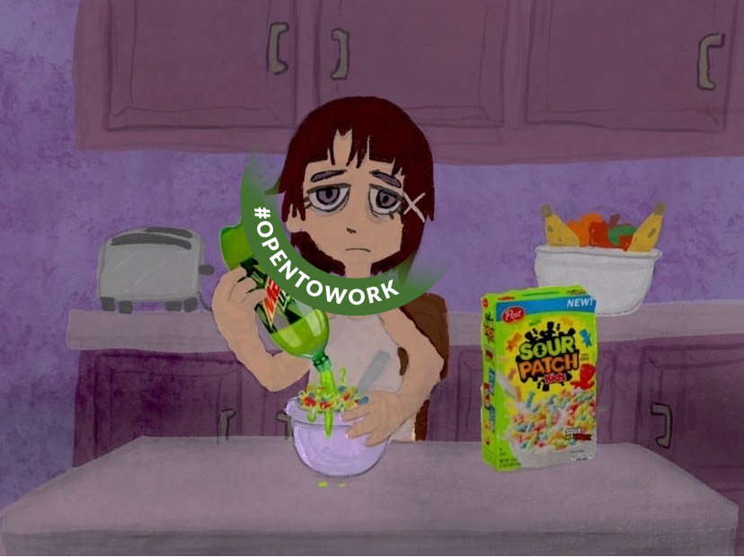

NOT EVEN FIRST DRAFT
About this book
If this is your first book about dlang; don't. This is a collection of rants about template meta-programming. Go read something else first: //todo expand list
Programming is D(a bit overhyped but standard)
Read this along side or after the template book; this book should be mandated reading for navigating template hell.
Making this at the earilest the 3rd book you read.
Contributing
Im very open to grammer and spelling edits, not so with tone and opinion policing. Geust chapters plz.
Me

//todo crop
Im monkyyy, the grumpy asshole whos chornicaly unempoyed and seemly unable to finish a solo project. //todo
Thoery
whats a template anyway
//todo make allot more verbose and clear, and get beta readers who dont understand templates
In cooking theres a difference between a techique and a recipe. A Betty Crocker yellow cake (americain edition) reads differently from a description of a stirfry. Likewise Stepanov ranting about math is different from plain old c.
https://youtu.be/KbC4jvGPFs0?si=8OdMfCIJAMAnUAKI&t=155 //todo look up video embeding //todo consider making my own cut/upload
//todo summerize with d code translations
Where c is very close to thin layer over a finished program and is therefore like repeating a packaged cake recipe, templates are where Stepanov can put his ideas as a techique.
You dont need to have betty crooker and her yellow number 7, her alumium powder, too hold your hand to stirfry pork and leeks; it will be fine, pinkie promise. Likewise functions like swap don't need to be complex things, they just need a little gap where a type can go. You dont need a "class that extends swapable" or some other dynamatic type thoery with strong opinions, you need a hole and a bit of text replacement. Where T can be a int or float, the meat of your choice could be pork or beef.
template stirfry(alias Meat, Vegibles...) and stirfry!(pork,leek); you replace specail tokens to generate your recipe on the fly. Which is fine because pork and beef are culiarily very simuliar, handling the list of vegibles may take some getting used to, to say nothing of how to express "seasoning". But all of that is possible.
//todo consider extending examples for vegetables and seasoning
However take note, a meat of your choosing is wildly underspecified; stirfry of crocodile is technically a phase that has syntactic meaning but ancient china probably did not define the seasoning profile for a Floridian delicacy. You have two choices, either a) Refuse to work for all choices or b) let it play out and let the user beware. Unlike a cookbook, an api can be opinionated and controlling, I think this is a mistake, the goal should be to attempt to compile everything. Let the user have their food.
It will be less work and have more product.
Bad turing-completeness
//todo rant about how "reductions" in computer science are often "expansions", a round trip conversion from sat to minesweeper will be much much larger
In the fundmentals of computer science is the concept of a "reduction", a turing machine can simulate lamda calculous, lamda calculous can emulate addition, and lamda calculous can run a turing machine emulator.
It should be noted this is a terrible name; a "reduction" is a drastic expansion to compute. It important for non-constructive math if a machine exists that you cant prove halts, its less so for you throwing together a 10 line script.
Lisp doesnt do chruch numerals, they use op code; so even that crowd has limits to the level of impractically they will tolerate. I believe a chruch numeral muliplication is O(nm^2) to actaully compute, while if you squint and ignore the most autist of programmers, muliplcation of ints is const of just a few cycles.
Templates for a genertic programmer can do anything, because it has enough chruch-ness to impliment the text replacement turing compleness thoery. BUT thats a truely awful method of computation. I believe D is far in the lead for simplifying and actaully compiling templates. Template metaprogramming is a chruch machine that generates turing machines. Even the safetyphiles will praise alias reassignment for being a massive speed up, its insanity it took so long it seems to me to be something like not requiring chruch numerals in lisp, before any list in template land would be of O(n^2) complexity before you even started. This book will cover imparitive template computation, these are bugs, but remember, how a chruch machine emulates a turing machine.
syntax sugar has semantic meaning
New-ish features
The template book is older then 10 years old; while D devolpment was slow, there was some progress. This section should serve as a extention to that book.
Alias reassignment
//todo since this was added after the template book, some coverage somewhere is nessery
//todo enum reassignment pattern
//todo upstream bug vs opends fix
openD string imports
//some example code idk
Other patterns
What are Overload Sets
--- a.d
import std;
void fizz(bool){"bool".writeln;}
--- app.d
import std;
void bar(int){"int".writeln;}
void bar(float){"float".writeln;}
alias foo=bar;
import a;
alias foo=fizz;
void foobar(alias A)(){
A(1);
A(13.37);
A(true);
}
unittest{
foobar!foo;// prints "int","float" and "bool"
}
What is foo, or for that matter foobar.A? Why does this work?
Its an overload set. (as are ALL symbols in D, just lets not worry about it)
Poeple who imagine a compiler being a stateless trasformation have little to say on the subject, theres a 4 paragraphs in the spec, the template book doesnt contain the phase.
But the compiler isnt a stateless abstraction (as implied by the spec) and as your tool, sharpen it. The compiler must compute something, whats a reasonable mental model for its behavoir?
Maybe alias's are some sensable abstractions? :)
No, alias's dont even exist. :D
alias foo=int;
unittest{
pragma(msg,__traits(identifier,foo));//Error: argument `int` has no identifier
}
Maybe alias's are no-op's that merely redirect as they say in the spec?
No, its modifies state. ^q^
void landmine()(){static assert(0);}
pragma(msg,"nothing exploded yet");
alias step=landmine!();//BOOM
My current best geuss is that the famous ast is an overload set tree and aliases. And alias is a stateful operation that adds to a todo list of initualizations, while returning an overload set "pointer". The walterism compiler seems to scan the tree chasing initualizations i.e. !() of a template, building up a tree compile time.
(and also selective imports, if you dont know, look into the topic when you get a dual context error)
//todo probaly could have code here showing some parts of this take
So, what is foo? Well adding:
foreach(A;__traits(getOverloads,mixin(__MODULE__),"foo",true)){
__traits(fullyQualifiedName,A).writeln;
}
prints
bar
app.bar
a.fizz
Well thats an answer.
Do I understand the difference between bar and app.bar? No. I expect its buggy as hell when I play with it. The n'th bar seems to be the (n-1)'th function parsed, maybe, who knows; maybe the first bar has claim of a list of header its combined with. These airnt good dependable traits but I dont know of better options for more stable infomation.
Explict Overload Sets
With (hopefully) an understanding of how overload sets one of the most fundmental concepts in the compiler. What do I suggest you do with it?
Specailization, lots and lots of specailization.
int foo(T:int)()=>1;
int foo(T:float)()=>2;
static assert(foo!float==2);
Foo when initualized can look up a value here. But remember last chapter, foo can be passed around and everything is an overload set; these could easily be types, functions, or other templates.
But most realisticly, an hacky "ct type array":
alias foo(int I:0)=int;
alias foo(int I:1)=float;
static foreach(I;0..2){
pragma(msg,foo!I.stringof);
}
Ive had an argument with kap resently(basicly nearly a fist fight >:( ) about the radical importance of templates, the anti-template extermist claimed "(T) > (int N,T)" if you can believe it. (I couldnt I was shocked by the ignorence)
He pointed at his own code: https://github.com/Kapendev/joka/blob/main/source/joka/math.d
alias BVec2 = GVec2!byte; /// A 2D vector using bytes.
alias IVec2 = GVec2!int; /// A 2D vector using ints.
alias UVec2 = GVec2!uint; /// A 2D vector using uints.
alias Vec2 = GVec2!float; /// A 2D vector using floats.
alias DVec2 = GVec2!double; /// A 2D vector using doubles.
alias BVec3 = GVec3!byte; /// A 3D vector using bytes.
...
alias BVec4 = GVec4!byte; /// A 4D vector using bytes.
...
/// A generic 2D vector.
struct GVec2(T) {
T x = 0; /// The X component of the vector.
T y = 0; /// The Y component of the vector.
...
/// A generic 3D vector.
struct GVec3(T) {
T x = 0; /// The X component of the vector.
T y = 0; /// The Y component of the vector.
T z = 0; /// The Z component of the vector.
...
...
I tried, in vain, to explain that he should just define all three reasonable ways to access the types.... but I disgess.
He seemed to think it was nessery to define a super vec template in some awful hellscape of meta programming and 500 lines of hard to untangle code. This isnt true. You need to define a single overload set but it is not nessery to make that a single template.
Consider this rewrite of the headers:
/// A generic 2D vector.
alias GVec2(T=float)=GVec!(2,T);
struct GVec(int N:2,T) {
T x = 0; /// The X component of the vector.
T y = 0; /// The Y component of the vector.
}
/// A generic 3D vector.
alias GVec3(T=float)=GVec!(3,T);
struct GVec(int N:3,T) {
T x = 0; /// The X component of the vector.
T y = 0; /// The Y component of the vector.
T z = 0; /// The Z component of the vector.
}
alias GVec4(T=float)=GVec!(4,T);
struct GVec(int N:4,T) {
T x = 0; /// The X component of the vector.
T y = 0; /// The Y component of the vector.
T z = 0; /// The Z component of the vector.
T w = 0; /// The W component of the vector.
}
Suddenly GVec is one overload set and (in thoery) doesnt change any of his other code.
This will allow users to define meta programming over the vec's:
void print(int N,T)(GVec!(N,T) bar){
import std;
writeln("this is a vector of ",N," ",T.stringof);
static foreach(C;"xyzw"[0..N]){
writeln(C,":",mixin("bar."~C));
}}
unittest{
IVec3(1,4,7).print;
DVec4(2,6,0,0).print;
}
this is a vector of 3 int
x:1
y:4
z:7
this is a vector of 4 double
x:2
y:6
z:0
w:0
and we could keep going :D
Overdoing Overload Sets
This is not about good code anymore this is about pushing the compiler
//todo takes kaps types and make a sumtype
Specailization as lookup tables
int foo(T:int)()=>1;
int foo(T:float)()=>2;
Walters wild ride
//todo find walters talking about dmd not dealllocating
//todo find quote of probaly snar complaining that dmd live edits ast
Given that the compiler doesnt deallocate and it live edits some bugs are natural imparitive features
Useful Bugs/ugliness
Monkyyy header
(T,T data) doesnt correctly reset
tg's counter
enum counter=cast(immutable(void)*)[0].ptr;
auto getcount()=>(*(cast(int*)counter));
auto count()=>(*(cast(int*)counter))++;
//todo explain, lots of code
unintentional Features
Mixin counter
My old compile time counter, its worse
mixin("__LINE__") with a -mixin=mix flag